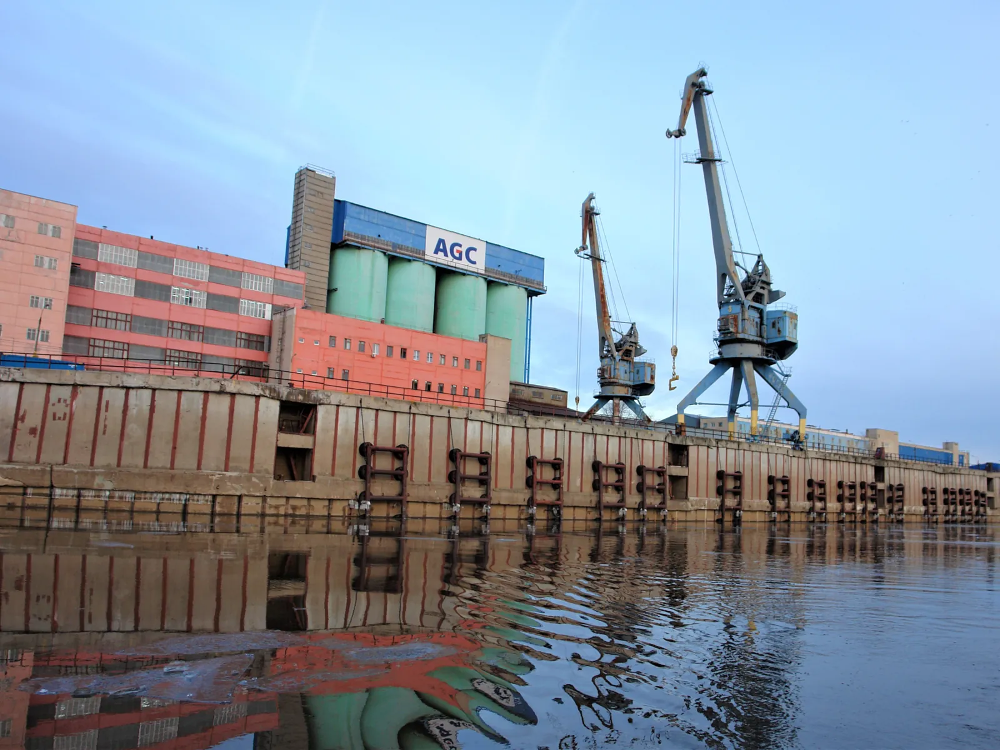

Документация для эксплуатации ГТС
Освидетельствование сооружений, разработка паспортов, протоколов идентификации и эксплуатационных документов.

01 / Подтверждение
Освидетельствование, паспортизация и идентификация
При эксплуатации объектов портовой инфраструктуры должна обеспечиваться безопасность плавания, закрепления и стоянки судов, проведения грузовых операций и увеличение эксплуатационного ресурса сооружений.
Комплекс мероприятий включает
- первичные, очередные, внеочередные и специальные обследования;
- разработку паспортов портовых сооружений;
- составление протоколов идентификации объектов регулирования;
- составление и регистрацию деклараций соответствия требованиям технических регламентов.
В паспорт заносятся сведения о назначении ГТС, расчетных судах, допустимых нагрузках, техническом состоянии, условиях в районе объекта и чертежи.
Виды и периодичность обследований
- Первичное — не позднее шести месяцев после ввода ГТС в эксплуатацию.
- Очередное — не реже одного раза в пять лет с учетом технического состояния.
- Внеочередное — после реконструкции или капитального ремонта, при значительных повреждениях и нарушении условий эксплуатации.
- Специальное — при сверхнормативных смещениях конструкций или признаках предельных деформаций.
По результатам обследования разрабатывается технический отчет, отражающий состояние сооружения и условия дальнейшей эксплуатации.
Что входит в пополняемую часть паспорта
- свидетельство о годности ГТС к эксплуатации;
- акт освидетельствования портового гидротехнического сооружения;
- заключение о состоянии сооружения;
- извещение.
Протокол идентификации фиксирует результаты определения объекта регулирования. Декларация соответствия инфраструктуры требованиям технических регламентов оформляется и регистрируется через ФГИС Росаккредитации.
Документы, определяющие требования
02 / Эксплуатация
Разработка эксплуатационных документов
Техническая документация отражает назначение и характеристики сооружения, допустимые нагрузки, состояние конструктивных элементов и правила безопасной эксплуатации.
Документы формируются на основании
- проектной и ранее разработанной эксплуатационной документации;
- результатов осмотров и визуально-инструментальных обследований;
- геодезических наблюдений и измерительного контроля;
- действующих технических регламентов, стандартов и сводов правил.
Состав документации определяется типом сооружения, его фактическим состоянием и условиями эксплуатации.
Порядок ведения и предоставления документов
Ответственность за сохранность, формирование и ведение технической документации несет эксплуатирующая организация. Порядок этих действий регламентирован техническими регламентами, ГОСТ Р 55561-2013, ГОСТ Р 54523-2011 и РД 31.35.10-86.
Документы предоставляются по запросу организации, выполняющей освидетельствование портового ГТС, а также надзорным и контролирующим органам. Поэтому комплект должен поддерживаться в актуальном состоянии на протяжении всего периода эксплуатации.